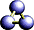
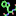

<!-- Determine whether we have any C-alpha-only chains or if structure
     too large to display in 3dmol.js -->
<FLD%>_COUNTER1=0</FLD%>
<LOOP NUNIQ>
<SKIP !CALPHA_ONLY>
<FLD%>_COUNTER1++</FLD%>
</SKIP !CALPHA_ONLY>
</LOOP NUNIQ>
<BLOCK LARGE>
<FLD%>_COUNTER1++</FLD%>
</BLOCK LARGE>

<!-- Table containing thumbnail image, plus buttons for 3D viewers -->
<table bgcolor="white" border=0 cellpadding=0 cellspacing=0>
 <tr>
<BLOCK SIDE_LINE>
  <td bgcolor="<FLD%>TAGS_COLOUR</FLD%>" width=1>
   
  </td>
</BLOCK SIDE_LINE>
  <td align=center width=240 height=240>

<SKIP COUNTER1[gt0]>
   <div id="gldiv" class="thumbnail_window">
     <P>&nbsp;<P>&nbsp;<P>&nbsp;<P>&nbsp;<P>
       <font size=+1>Loading ...</font>
   </div>
</SKIP COUNTER1[gt0]>
<SKIP COUNTER1[eq0]>
   
</SKIP COUNTER1[eq0]>

  </td>
 </tr>

 <!-- Gap -->
 <tr>
<BLOCK SIDE_LINE>
  <td bgcolor="<FLD%>TAGS_COLOUR</FLD%>" width=1>
   
  </td>
</BLOCK SIDE_LINE>
  <td>
   
  </td>
 </tr>

 <!-- Viewers -->
 <tr>
<BLOCK SIDE_LINE>
  <td bgcolor="<FLD%>TAGS_COLOUR</FLD%>" width=1>
   
  </td>
</BLOCK SIDE_LINE>
<SKIP COUNTER1[gt0]>
  <td colspan=3 align=center>
   <table bgcolor="white" border=0 cellpadding=2 cellspacing=0>
    <tr>
<!--
     <td align=left valign=center>
      <B>View in: &nbsp;</B>
     </td>
-->

<!--
     <td>&nbsp;</td>
     <td align=center valign=center>

      <div id="3dicon">

      <!-- 3Dmol.js - in own pop-up window -->
<!--
      <a href="./3Dmoljsbox.html"
       onclick="NewWindow(this.href,'3Dmol_<FLD%>PDB_CODE</FLD%>','650','650','yes');return false;"
       onmouseover="return overlib('Open new window for 3Dmol.js view of structure', WRAP);"
       onmouseout="return nd();"></a>
      </div>

     </td>
-->

     <td align=center valign=center>
      <!-- RasMol -->
      <a href="../rasmol/<LNK%>PDB_CODE</LNK%>.rasmol"
       download type="application/x-rasmol"
       title="View schematic of 3D structure in RasMol"></A>

     </td>

     <!-- JSmol -->
<!--
     <td align=left valign=center>
      <a href="./jmolrasmol.html&param1=pdbsum"
      onclick="NewWindow(this.href,'jmol','750','750','yes');return false;"
       onmouseover="return overlib('View schematic of 3D structure in JSmol', WRAP);"
       onmouseout="return nd();"></A>
     </td>
-->

     <!-- PyMol -->
     <td align=left valign=center>
      <a href="../pymol/<LNK%>PDB_CODE</LNK%>.pml"
       download type="application/x-pymol"
       title="View schematic of 3D structure in PyMol"></A>
     </td>

     <td>&nbsp;</td>
    </tr>

   </table>
  </td>
</SKIP COUNTER1[gt0]>
 </tr>

</table>
